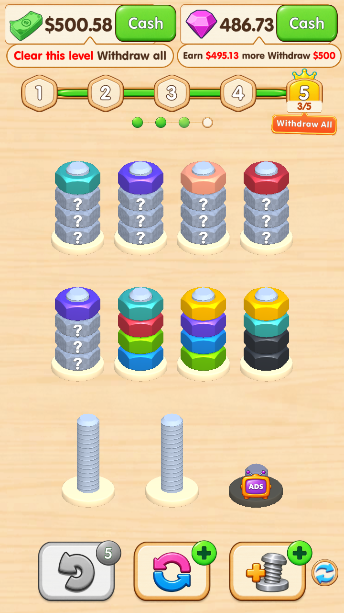
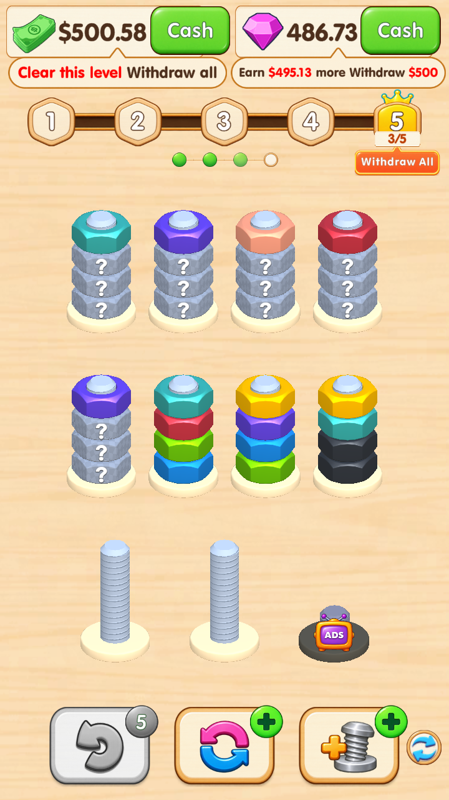
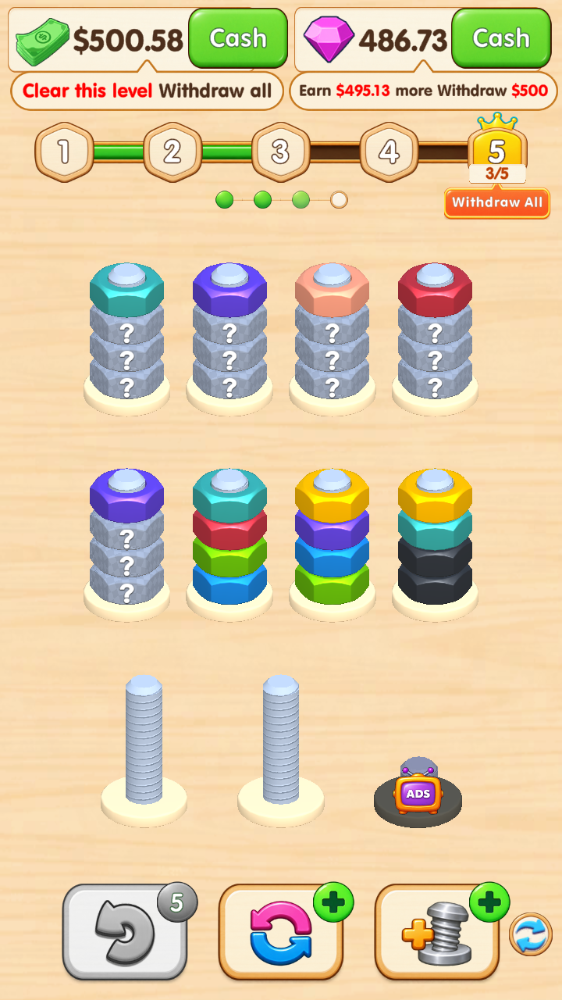
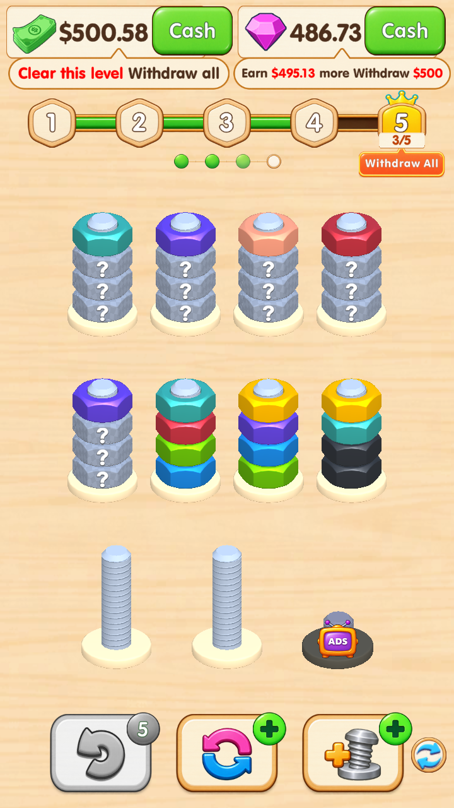

以下为同一关卡状态的 Unity Editor Play Mode 运行截图（720 × 1280），上方仅裁切显示进度区域。并非 AI 效果图或手机实拍。

实际改动：两张 PNG 素材。沿用原画布 831 × 44 / 829 × 44、原节点位置、原横向 Filled 组件及进度计算；标准三段适配仅延长中段，圆角等比缩放。运行检查通过，原用户存档已恢复。
以下是相同真实 Canvas 的显式渲染测试：仅临时设置 fillAmount，不代表玩家关卡进度；正常刷新后恢复原值。



使用内置 image_gen，保持原有绿条与木框风格，修正扁椭圆轮廓，移除绿芯木框。透明边裁切、三段适配及下采样后导入原文件。
最终工程素材：绿色填充 · 木质底槽 · 完整提示词 · 导出脚本